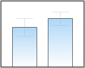
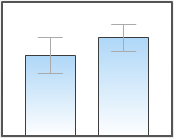

PowerCharts v3 gives you the option to configure a variety of functional as well as cosmetic properties of the error bars. The following list of attributes let you configure different facets of error bars like error bar color, thickness, alpha, width etc.
| Attribute Name | Type | Description | Example | Sample Image |
| halfErrorBar | Boolean | Lets you set whether to show half error bars or full error bars. By default this attribute is set to 1. | halfErrorBar='0' |  |
| errorBarColor | Hex Code | Lets you set a color for the error bars. | errorBarColor='F55858' |  |
| errorBarAlpha | Numeric Value (0-100) | Lets you set the alpha of the error bars. | errorBarAlpha='45' |  |
| errorBarThickness | Numeric value | Lets you set the thickness of the error bars. | errorBarThickness='3' |  |
| errorBarWidthPercent | Numeric Value | Lets you configure the width of the error bars as percent of the column width. | errorBarWidthPercent='50' |  |